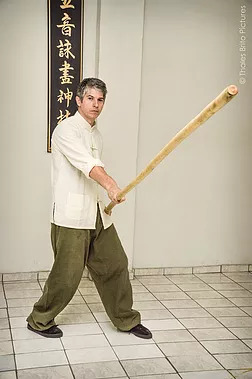

Luk Din Bune Kwan
Por Thomas Pinheiro
O bastão é considerado a arma mãe no kung fu, sua utilização está ligada aos primórdios da arte marcial chinesa. O estilo Wing Chun teria absorvido a utilização do bastão através da troca de técnicas entre Chi Shin e Leung Yee Tai. Wong Wah Bo, também especialista em Wing Chun Kuen e pertencente a uma toupe de ópera chinesa juntamente a Leung Yee Tai moravam em um barco, e no barco onde se apresentava a troupe, Leung Yee Tai fora designado a trabalhar na cozinha, onde acabou por conhecer o famoso mestre Chi Shin. Leung Tai aprendeu técnicas de bastão longo e Chi Shin (grande mestre em Hung Kuen) teria recebido técnicas de braço de Wing Chun.
O estilo Wing Chun é um sistema marcial que teve como base a luta corporal sem utilização de armas, porém para aquela época, o que hoje são chamadas armas brancas, eram letais, e as armas que possuíam lâmina demonstravam uma má intenção, ou uma intenção deliberadamente bélica. O bastão, luk dim bun kwan, tem um formato cônico, com uma extremidade mais grossa em relação a outra, seu peso varia conforme o material, madeira nobre, ou madeira do tipo flexível porém dura (white oak), ou rattan.
A característica das técnicas se assemelham às da lança, aliás, para aquela época o uso do bastão era uma forma de não demonstrar, de esconder a possibilidade de que munido de uma vara utilizada para fins sociais (apoio, abrir mata, remo, suporte de balde, etc...) seria manejada de forma mortal.
Quando da incorporação do bastão no Wing Chun, a preocupação maior ficou em relação a um combate de longa distância ao oponente, sendo a arma manipulada por uma pessoa sob o barco, ou numa situação mais voltada de um para um, por isso apesar de haver um preciso e forte trabalho das pernas, a deslocação é curtíssima.
Assim como o Wing Chun fora ensinado para pessoas que já tinham habilidade em outro estilo, e portanto existiram combinações de conhecimentos e técnicas a aquelas próprias e desenvolvidas no Wing Chun, o uso do bastão também pôde utilizar-se de outras técnicas adversas, logicamente este é um ponto de vista que ultrapassa uma idéia ortodoxa de se prender apenas uma maneira do uso do bastão.
Muitos mestres de Wing Chun acrescentaram ao uso das estocadas, varridas, e movimentos em círculo, um uso mais amplo, com movimentação capaz de enfrentar um maior número de oponentes, de se ter uma maior agilidade. O luk dim bun kwan é um bastão longo, cerca de 2 metros e meio de comprimento, o qual era utilizado nos juncos pelos barqueiros. Segundo relatos do falecido grande mestre Yip Man, Wong Wah Bo seria uma pessoa muito reservada e inicialmente quem teria sido instruído fora Leung Tai, porém as técnicas de Wing Chun com o bastão teriam sido desenvolvidas pelos dois.
O manejo de bastão de forma tradicional no Wing Chun se utiliza de base sólida, como a do cavalo, e de bases flexíveis como a do gato e uma própria do Wing Chun, jeeu ma. A combinação está entre o movimento rápido e forte das pernas aliados à cintura e a explosão dos braços, características marcantes no estilo Wing Chun.
Utiliza-se de seis técnicas e meia, que são sete movimentos, porém um executa meio movimento em relação aos outros seis. O que muitos praticantes esquecem, é que outros estilos de kung fu também desenvolveram muitas técnicas e formas diferentes do uso do bastão, em relação às distâncias do oponente, ao campo de batalha e a quantidade de adversários.
Absorver outras técnicas podem também ajudar e muito ao praticante, pois abrem sempre novas possibilidades de se absorver ou contornar uma situação que muitas vezes fogem do habitual, mas sem perder a objetividade, explosão e sensibilidade, características do Wing Chun. Ou seja o bastão deve integrar-se ao corpo do praticante.
O treino em Wing Chun com o bastão é normalmente ensinado posterioriormente à aprendizagem das técnicas corporais; contribuem para uma maior potência do uso da cintura, ajudando a desenvolver os deslocamentos, assim como o fortalecimento de juntas e tendões dos braços.
São utilizados para o treinamento a prática de técnicas isoladas no ar, aparelhos como: argola, mook jong específico, treino com parceiro, no qual se inclui o chi kwan (um tipo de exercício semelhante ao chi sau, só que com os bastões e aplicações). Assim como pernas e braços, o bastão deve se tornar um prolongamento do corpo do praticante, formando uma peça única. O seu aprendizado antes do tempo além de trazer lesões, também prejudica o aprendizado das técnicas corporais.